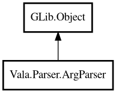

ArgParser
Object Hierarchy:

Description:
public class ArgParser : Object
ArgParse class parse application options. Options must be registered before parsing the option arguments.
Content:
Classes:
- Builder - Gof Builder pattern for
ArgParse constructor.
Methods:
- public void addOption (string shortOption, string longOption, string description)
Add option for using parse.
- public List<string> copyArgWithoutCmdNameAndOptions ()
Copy commandline arguments without application name and options.
- public bool hasOption (string shortOption)
Returns whether the option is specified.
- public void parse (string[] args)
Parse the option string.
- public string parseResult ()
Return string that contains all option and arguments. Option contains
ON / OFF information.
- public void showVersion ()
Show version of this appliction on STDOUT.
- public void usage ()
Show usage of this application on STDOUT.
Inherited Members:
All known members inherited from class GLib.Object
- @get
- @new
- @ref
- @set
- add_toggle_ref
- add_weak_pointer
- bind_property
- connect
- constructed
- disconnect
- dispose
- dup_data
- dup_qdata
- force_floating
- freeze_notify
- get_class
- get_data
- get_property
- get_qdata
- get_type
- getv
- interface_find_property
- interface_install_property
- interface_list_properties
- is_floating
- new_valist
- new_with_properties
- newv
- notify
- notify_property
- ref_count
- ref_sink
- remove_toggle_ref
- remove_weak_pointer
- replace_data
- replace_qdata
- set_data
- set_data_full
- set_property
- set_qdata
- set_qdata_full
- set_valist
- setv
- steal_data
- steal_qdata
- thaw_notify
- unref
- watch_closure
- weak_ref
- weak_unref